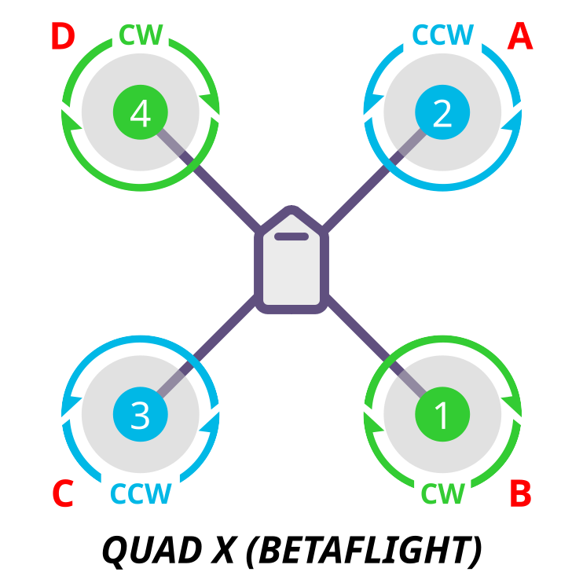

Task 14: Motor check
Connect Mission Planner, confirm frame settings, and verify motor order and direction.
Parts required
- Vehicle with motors, ESC, FC, battery lead, and camera/GPS mount installed
- 4S LiPo battery
Tools required
- USB-C cable
- PC running Mission Planner
Step 1. Connect the FC and verify attitude sensing
- Connect the PC to the flight controller with the USB-C cable.
- Open Mission Planner.
- Select COMnn Ardupilot MAVLink in the top-right corner, set Baud rate = 921600, and select CONNECT.
- Roll, pitch, and yaw the vehicle gently by hand.
- Confirm the artificial horizon on the Data tab moves in the correct direction.
No propellers installed.
Keep the propellers off for the entire motor-check task. Sensor calibration should already be complete before you start.
Keep the propellers off for the entire motor-check task. Sensor calibration should already be complete before you start.
Step 2. Confirm the frame settings
- Open CONFIG → Full Parameter List.
- Navigate to FRAME.
- Confirm FRAME_CLASS = 1 (Quad).
- Confirm FRAME_TYPE = 12 (BetaFlight X).
Mismatching parameters.
If the parameters do not match the values above, ask for assistance from a faculty member.
If the parameters do not match the values above, ask for assistance from a faculty member.
Step 3. Run Motor Test
- Open SETUP → Optional Hardware → Motor Test.
- Only after you are on the Motor Test page, connect the 4S LiPo battery.
- Set Throttle % = 5 and Duration (s) = 3.
- Test one motor at a time.
- Confirm each motor spins and that its direction matches the diagram.
- Stop immediately if a motor spins the wrong way, does not start cleanly, or makes abnormal noise.

Motor map for Motor Test.
Common errors
- Testing with propellers installed.
- Using the wrong COM port or baud rate.
- Forgetting to reboot after changing FRAME_CLASS or FRAME_TYPE.
- Ignoring abnormal motor behavior such as stuttering, scraping, or non-start.